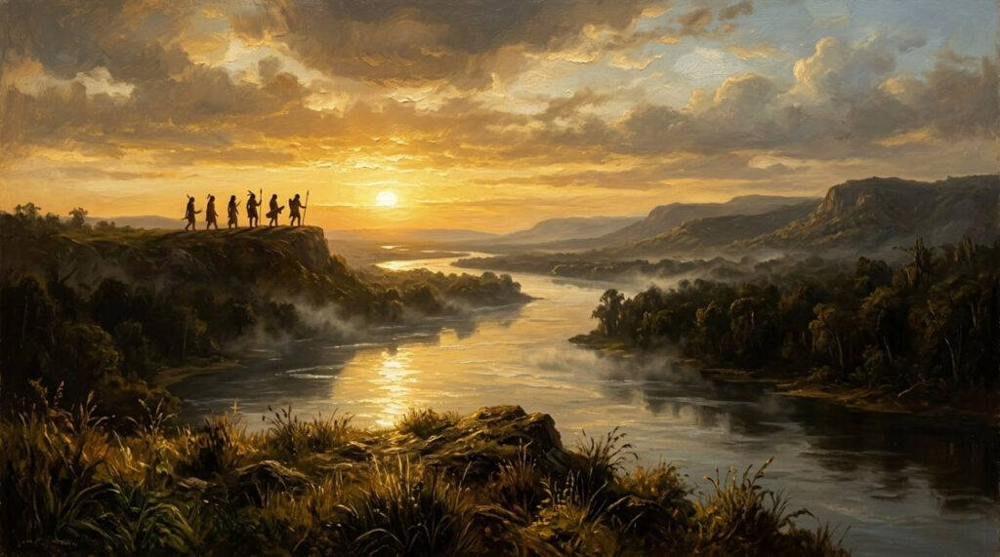
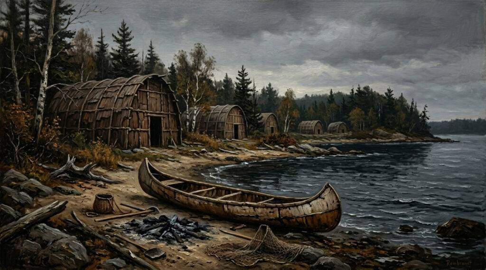
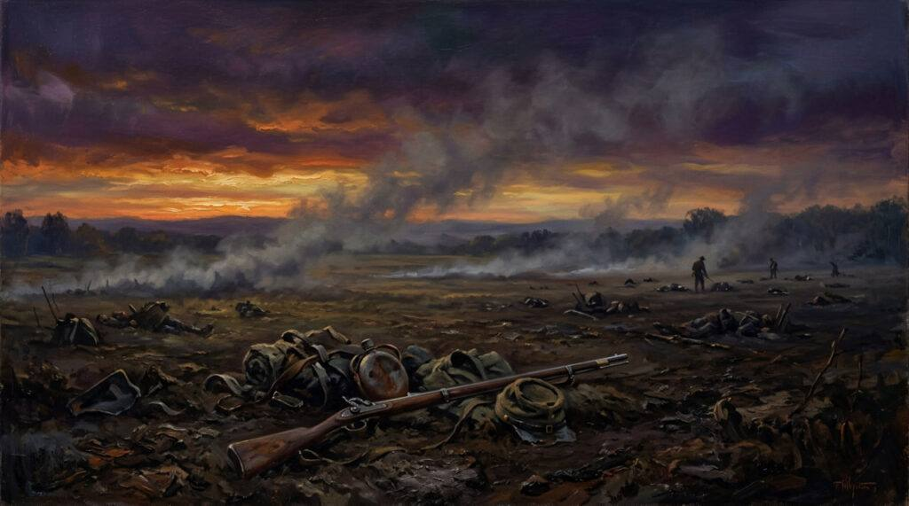

The land was old before the nation was young — and the gap between America’s ideals and its reality has driven almost everything that followed.

Before a single document was signed, before a single shot was fired, before the name “America” existed at all, this land was ancient.
Archaeologists now believe the first human beings arrived in what is now the continental United States anywhere from 14,000 to 20,000 years ago — and possibly earlier. A recent study published in Science Advances by Japanese and American researchers proposed that the earliest ancestors of Native Americans may not have crossed Beringia over land at all, but sailed down the Pacific coast from a region spanning Hokkaido and the Kuril Islands, using routes now submerged beneath the ocean. The debate is far from settled. What is beyond dispute is that by the time European ships appeared on the horizon in the late 1400s, the Western Hemisphere was home to somewhere between 50 and 100 million people, depending on which historians you trust — and the entire population of North America, from the Pacific to the Atlantic, had been shaped by millennia of human hands.
Most American history courses begin around 1776. This one begins much earlier, because everything that happened after — the Revolution, the Civil War, the Civil Rights Movement, the republic’s current strains — grows directly from what was already there. The story of the United States is not just the story of what Americans built. It is the story of what they built on, and what they buried in the process.
What follows is a compressed account of that entire arc, from the first footsteps to the present question: can the experiment survive?
Key Takeaways
- The Americas may have been populated over 20,000 years ago via coastal sea routes, not just the land bridge, according to new genetic research.
- Cahokia, a Native American city near present-day St. Louis, had an estimated population of 10,000–20,000 around 1100 AD — likely larger than London at the same time.
- Thomas Paine’s Common Sense sold roughly 120,000 copies in its first three months, in a country of only 2.5 million people — the equivalent of 15 million copies by today’s population.
- The Cherokee won a Supreme Court case against their removal in 1832, and Andrew Jackson ignored the ruling — one of the most brazen acts of executive defiance in American history.
- Between 50% and 90% of the pre-contact Indigenous population of the Americas died within a century of European contact, mostly from disease.
- The Haudenosaunee Confederacy — a functioning democracy of six nations — predated the U.S. Constitution and may have influenced its design, though historians debate the extent of this.
- The Civil War killed more Americans than all other American wars combined, a figure that still isn’t fully absorbed.
The Continent Columbus Never Knew
The Western Hemisphere in 1491 was not a wilderness. This is the thing most American textbooks still fail to fully convey, even now.
The Ancestral Puebloans had constructed multi-story stone complexes at Chaco Canyon, New Mexico — a sophisticated ceremonial and trade center that drew people from hundreds of miles around. The Maya had developed writing systems and astronomical calendars of remarkable precision. And in the Mississippi River Valley, a city called Cahokia — whose ruins lie near present-day East St. Louis — had a population at its peak around 1100 AD of between 10,000 and 20,000 people. London, at the same moment, had perhaps 14,000 to 18,000.
Think about that for a second. The largest city in North America in the year 1100 was in Illinois.
Scholars estimate the entire Western Hemisphere housed somewhere between 50 and 100 million people before Columbus. The debate over this number has been, as historian David Henige once put it, “perhaps the most unanswerable question in the world.” But even at the conservative end, the Americas were not empty. They were full a reality supported by research on the Population history of Indigenous Americas.
One civilization in particular deserves more attention than it typically receives. The Haudenosaunee — known to the French as the Iroquois — was a political confederation of five nations (later six) in what is now upstate New York: the Mohawk, Oneida, Onondaga, Cayuga, Seneca, and eventually the Tuscarora. The Haudenosaunee governed themselves through a document called the Great Law of Peace, which established consensus decision-making, women’s power to appoint and remove leaders, and protections for individual liberties. The U.S. Congress passed a resolution in 1987 acknowledging that the original framers of the Constitution, including George Washington and Benjamin Franklin, were known to have admired the Haudenosaunee model. Whether the Constitution was directly modeled on it is disputed by historians.
What is not disputed is that at the 1744 Lancaster conference, an Onondaga leader named Canasatego told the colonial delegates, in front of Benjamin Franklin, that they would be stronger united than divided — and that Franklin printed and distributed the transcript. The founders had a working example of a federal democracy on the same continent. Whether they admitted to learning from it is another matter.
The Catastrophe That Preceded the Conquest
On October 12, 1492, a lookout on the Spanish caravel Pinta named Rodrigo de Triana shouted “Tierra! Tierra!” and the three ships of Christopher Columbus dropped anchor in the Bahamas. Columbus claimed the island he found — which its inhabitants called Guanahani — for the Spanish Crown, as if the people standing on the shore were irrelevant to that claim.

Columbus was, by his own reckoning, lost. He had underestimated the circumference of the earth by several thousand miles, believing he had reached Asia. He never set foot on the North American mainland. He died in 1506 still convinced he had found a route to the East. The continent he stumbled upon was named after a different Italian, Amerigo Vespucci, who recognized — and argued in widely circulated letters — that this was not Asia but an entirely unknown landmass.
What Columbus’s four voyages unleashed was a catastrophe of staggering proportions. The peoples of the Western Hemisphere had no immunity to smallpox, measles, influenza, or typhus. Between 50% and 90% of the pre-contact Indigenous population of the Americas died within a century of European contact — in waves of plague that often moved faster than the explorers themselves. Historians from University College London have argued this mass death was so total that it contributed to temporary global cooling, as previously farmed land grew wild and absorbed carbon from the atmosphere.
The detail most history classes still underteach is this: when English settlers arrived on the coast of Massachusetts in 1620, they found a landscape emptied by epidemics that had struck just years before. They interpreted the empty fields and abandoned villages as divine providence clearing the land for their use. They were standing in the ruins of a catastrophe they had caused but not witnessed.
St. Augustine, Florida, founded by Spain in 1565, was the first permanent European settlement in what is now the United States — more than forty years before the English planted their first successful colony. This is a fact that consistently surprises people who assume American history begins in Plymouth.
The Tobacco Plant That Built an Empire — and Its Price
Jamestown, Virginia, founded in 1607, is where the story of English colonial America begins — but barely. The site was poorly chosen: a marshy peninsula, prone to disease. Of the 104 men who arrived in May 1607, only 38 were still alive by winter. The early colonists, many of them gentlemen unaccustomed to physical labor, were dying of starvation while refusing to grow food.
What saved Jamestown economically was a single plant. John Rolfe — later famous for marrying the Powhatan woman Pocahontas — began cultivating a strain of tobacco that found eager buyers in England, and by the 1620s Virginia was exporting it in quantity. Tobacco saved the colony. It also created an insatiable demand for labor that the colony could not meet through willing immigrants.
In 1619, a Dutch ship arrived at Jamestown carrying roughly twenty Africans, traded to the colonists for food and supplies. Their legal status — enslaved or indentured — is debated by historians. What is beyond debate is that within fifty years, Virginia had a comprehensive legal system of racial slavery. The first Africans arrived the same year as the first American representative assembly. These two facts have defined American history ever since.
The thirteen colonies that would eventually declare independence were not a coherent unit. Massachusetts was settled by Puritans seeking religious freedom — for themselves, not for others. Maryland was founded as a refuge for English Catholics. Pennsylvania was a Quaker experiment in tolerance. Georgia was conceived as a haven for English debtors. Each colony developed its own character, its own economy, its own tensions. The idea that they would become a single nation, governed by a single constitution, would have seemed improbable to anyone living through the 1680s.
There is a quiet irony in the fact that the most philosophically sophisticated colonists — the educated planters of Virginia, the men who would write about liberty and natural rights — were building their estates on the labor of people they legally owned. Thomas Jefferson, principal author of the Declaration of Independence, enslaved more than 600 people over the course of his life. He freed almost none of them.
The Pamphlet That Started a Revolution
The French and Indian War ended in 1763 with a comprehensive British victory. France ceded Canada. Britain emerged dominant across North America. It also emerged deeply in debt, and Parliament looked to the colonies to help pay for it. What followed was a series of taxes — the Stamp Act of 1765, the Townshend Acts of 1767 — that triggered not just protests but a constitutional argument the colonists pursued with considerable sophistication: that Englishmen could only be taxed by their own representatives, and the colonists had none in Parliament.
Britain’s escalating attempts to enforce its authority only deepened the crisis. When British troops shot into a crowd of Bostonians in 1770 — killing five people, including Crispus Attucks, a free Black man often identified as the first casualty of the Revolution — colonial newspapers turned it into propaganda. Samuel Adams understood that he was building a movement, and he was very good at it.
The tipping point came in the form of a forty-seven-page pamphlet.
Thomas Paine, an English immigrant who had arrived in Philadelphia in 1774 with a letter of recommendation from Benjamin Franklin, published Common Sense on January 10, 1776. It sold approximately 120,000 copies in its first three months, in a country of only 2.5 million people. Adjusted for today’s U.S. population, that is the equivalent of about 15 million copies. An estimated 20% of colonial households owned one. The most cautious historians dispute the exact figures — Paine was not a reliable self-reporter — but by any measure, the pamphlet reached a remarkable share of the population — a scale later documented by the Museum of the American Revolution.
Paine didn’t make legal arguments. He made emotional ones: he called monarchy absurd, hereditary privilege fraudulent, and independence not just desirable but obvious. “There is something absurd,” he wrote, “in supposing a continent to be perpetually governed by an island.”
The Declaration of Independence, adopted July 4, 1776, was written primarily by Thomas Jefferson in about two weeks. Its opening is among the most consequential sentences in political history. It was also, as Jefferson wrote it, incomplete: a passage condemning the slave trade was struck from his draft by Southern delegates who would not sign a document that attacked the institution on which their economy depended. Jefferson accepted the compromise and went home to his enslaved workers.
The war that followed lasted eight years. Washington lost more battles than he won. The winter at Valley Forge in 1777-78 nearly broke the Continental Army. What saved the Revolution was French intervention in 1778 — money, troops, and a navy. The decisive battle at Yorktown in 1781 was a combined Franco-American operation. The American Revolution was, in a meaningful sense, won with French help. This is rarely the centerpiece of Fourth of July celebrations.
The Document That Almost Wasn’t
Winning the war was the easier part. Building a government that could actually govern was harder.
The Articles of Confederation, the first governing document of the United States, created a Congress with no power to tax, no ability to regulate commerce between states, and no mechanism for enforcing its decisions. The result was predictable chaos: states imposing tariffs on each other’s goods, printing conflicting currencies, ignoring their debt obligations.
The crisis came to a head in 1786, when Daniel Shays — a Revolutionary War veteran whose farm was being seized for unpaid taxes — led an armed uprising of Massachusetts farmers against the state government. Shays’ Rebellion was suppressed, but it alarmed the country’s leadership. If the central government couldn’t maintain order, the Revolution’s achievements would unravel.
The Constitutional Convention of 1787, which met in strict secrecy throughout a hot Philadelphia summer, produced one of the most consequential documents in human history. Fifty-five delegates debated the fundamental questions of democratic governance: how to balance large and small states, how to separate powers, how to prevent tyranny. The Great Compromise created the bicameral legislature — a House proportional to population, a Senate giving each state equal votes.
The Three-Fifths Compromise — counting enslaved people as three-fifths of a person for congressional apportionment — was not a philosophical statement about humanity. It was a deal about political power: it gave slave states more representation in Congress than their free population alone would have justified, a structural advantage that shaped American politics for the next seventy years.
The Federalist Papers — eighty-five essays written by Alexander Hamilton, James Madison, and John Jay under the pseudonym Publius, defending the new Constitution in the press — remain among the finest political writing in the English language. Madison, the principal architect of the Constitution, was 36 years old. Hamilton was 32.
Benjamin Franklin, leaving the Constitutional Convention in 1787, was reportedly asked what kind of government the delegates had produced. “A republic,” he answered, “if you can keep it.” The conditional has never stopped echoing.
Manifest Destiny and Its Graves
The young republic was hungry for land. The Louisiana Purchase of 1803 — in which Napoleon Bonaparte, having abandoned his American ambitions after the Haitian Revolution destroyed his western fleet, sold the United States a vast swath of territory stretching from New Orleans to Canada — roughly doubled the size of the country overnight for approximately fifteen million dollars, about three cents per acre. Jefferson had serious constitutional doubts about whether the presidency had the authority to make such a purchase. He swallowed his doubts and completed the deal.
By 1850, following the annexation of Texas, the settlement of the Oregon border with Britain, and the Mexican-American War, the United States stretched from the Atlantic to the Pacific. The territory had expanded by roughly 1,000% in less than seventy years of independence.
The ideology that justified this was called Manifest Destiny — the conviction that God had ordained the American people to spread across the continent, bringing civilization and democratic government. It was a beautiful idea that performed a specific function: it transformed territorial ambition into divine mission, making conquest feel like stewardship. The people being displaced were not consulted about the theology.
The Trail of Tears was the largest and most visible expression of what Manifest Destiny actually meant in practice. In 1830, President Andrew Jackson signed the Indian Removal Act, authorizing the forced relocation of the five major Native nations of the American Southeast. The Cherokee, who had a written language, a newspaper, a constitution, and elected representatives, fought their removal in the Supreme Court — and won. In Worcester v. Georgia (1832), Chief Justice John Marshall ruled that Georgia had no authority over Cherokee territory.
Andrew Jackson’s response was to ignore the ruling. Whether he actually said “John Marshall has made his decision, now let him enforce it” is disputed — the quote’s authenticity is uncertain — but his actions matched the sentiment. Between 1838 and 1839, approximately 16,000 Cherokee were marched at gunpoint from their homeland to Indian Territory in present-day Oklahoma. Roughly 4,000, and possibly more, died of cold, hunger, and disease. The Cherokee called it Nunna daul Tsuny: the Trail Where They Cried.
For decades afterward, Andrew Jackson’s face appeared on the twenty-dollar bill.
The Experiment Nearly Ends
The election of Abraham Lincoln in November 1860 was the trigger. Lincoln had not campaigned to abolish slavery where it existed — only to prevent its expansion into new territories. It was enough. South Carolina seceded in December. By Lincoln’s inauguration on March 4, 1861, six more states had followed.

Alexander Stephens of Georgia, Confederate Vice President, explained the new government’s founding principles in a speech on March 21, 1861 — before a single battle had been fought. The Confederacy, he said, was founded on the “great truth” that African Americans were not equal to white Americans. Slavery was its “cornerstone.” The later mythology of the Lost Cause — the idea that the South fought for states’ rights and a noble way of life — was constructed after the defeat. The primary sources of the Confederacy’s own leaders do not support it.
The Civil War lasted four years and killed between 620,000 and 750,000 Americans — more than all other American wars combined. It was the first modern war in important respects: rifled muskets and artillery that made frontal assault catastrophically expensive, iron-clad ships that made wooden navies obsolete, railroads and telegraphs that changed logistics entirely.
Lincoln issued the Emancipation Proclamation on January 1, 1863, declaring enslaved people in Confederate states to be free. It was carefully calibrated — it did not free enslaved people in the loyal border states — but its consequences were profound. Approximately 180,000 Black men joined the Union Army, fighting in segregated units under mostly white officers, often assigned the most dangerous work. Their service permanently undermined the racist assumptions used to justify their oppression.
The war ended with Lee’s surrender at Appomattox on April 9, 1865. Five days later, Lincoln was shot by John Wilkes Booth at Ford’s Theatre. He died the next morning.
Reconstruction — the attempt to rebuild the South and integrate formerly enslaved people into American civic life — began with genuine ambition. The Thirteenth, Fourteenth, and Fifteenth Amendments abolished slavery, established birthright citizenship, and guaranteed voting rights regardless of race. Black men were elected to Congress. Schools were built. For a few years, it looked like it might work.
It didn’t. The Compromise of 1877 effectively ended Reconstruction, withdrawing federal troops from the South. White supremacist groups used systematic terrorism to drive Black voters from the polls. Poll taxes, literacy tests, and grandfather clauses disenfranchised Black citizens while appearing race-neutral. Lynching averaged more than one incident per week in the 1890s. Ida B. Wells, a Black journalist, documented these murders at constant personal risk, becoming one of the most important investigative journalists in American history.
By 1900, the brief flowering of Black political power had been almost entirely suppressed. The constitutional promise of the Reconstruction amendments would not be meaningfully fulfilled for another century.
The Unfinished Business
The twentieth century brought the United States to global dominance — through two world wars, the New Deal’s reinvention of the federal government’s role in citizens’ lives, the Cold War’s transformation of American identity, and the Civil Rights Movement’s long, disciplined, strategically brilliant campaign to make the founding ideals apply to everyone.
Rosa Parks’s refusal to give up her bus seat in Montgomery in 1955 is often told as a spontaneous act of exhaustion. It wasn’t. She had been active in civil rights organizing for years, and the decision to make a stand that day was deliberate. The 381-day Montgomery bus boycott that followed made Martin Luther King Jr. a national figure and demonstrated that nonviolent direct action could work. The sit-ins at lunch counters beginning in Greensboro, North Carolina in 1960; the Freedom Rides; the Birmingham campaign of 1963, where Public Safety Commissioner Bull Connor’s fire hoses and police dogs produced images that horrified the world; the March on Washington in August 1963 — these were not spontaneous uprisings. They were a sustained campaign, conducted by people of extraordinary courage, against a system that had 400 years of inertia on its side.
The Civil Rights Act of 1964 and the Voting Rights Act of 1965 gave the Fourteenth and Fifteenth Amendments real teeth for the first time. They were legislative achievements of the first order. They also demonstrated that passing laws is easier than changing the conditions laws were designed to address — that the structures of inequality built over centuries do not dissolve in a decade as documented by the National Museum of African American History and Culture.
The late twentieth century brought new shocks: Vietnam, Watergate, the Reagan revolution, the collapse of the Soviet Union, and then the shock of September 11, 2001 — which triggered two decades of war in Afghanistan and Iraq, the longest wars in American history, neither of which ended in clear victory.
The financial crisis of 2008, Barack Obama’s election as the first Black president, the polarization of the 2010s, the events of January 6, 2021, the COVID-19 pandemic that killed over a million Americans — each of these developments has tested different elements of what the republic is, what it promises, and whether those promises can be kept.
What’s striking, looking at the full arc, is not how far the United States has fallen from its ideals. It is how consistently the gap between those ideals and reality has produced the pressure for change — imperfect, contested, incomplete change, but change nonetheless.
Frequently Asked Questions About the History of the United States
Who were the first people to live in what is now the United States?
The first inhabitants of the Americas arrived from Northeast Asia at least 14,000 years ago, and possibly as early as 20,000 years ago. The original theory held that they crossed a land bridge from Siberia called Beringia during the last Ice Age. Newer research, including a 2026 study published in Science Advances, suggests some may have arrived by sea, following the Pacific coastline southward from regions near modern-day Japan. The debate among archaeologists and geneticists is ongoing.
Did Christopher Columbus discover America?
Columbus did not “discover” a land that was already home to tens of millions of people. He also never set foot on what is now the United States — his voyages explored the Caribbean, Central America, and the northern coast of South America. The first European to set foot in North America is generally credited to the Norse explorer Leif Erikson, who reached eastern Canada around 1000 AD. The oldest continuously inhabited European-founded city in the United States is St. Augustine, Florida, established by Spain in 1565.
What caused the American Revolution?
The American Revolution grew from a constitutional argument, not simply a tax dispute. Colonists objected to Parliament taxing them without granting them representation in that body. Britain’s escalating responses — troops stationed in Boston, the closure of Boston Harbor after the Tea Party, restrictions on colonial self-government — convinced many moderates that reconciliation was impossible. Thomas Paine’s Common Sense (1776) shifted public opinion from reforming the imperial relationship to ending it.
Was the Civil War really about slavery?
Yes. The Confederate Vice President, Alexander Stephens, stated plainly in March 1861 that slavery was the Confederacy’s “cornerstone” and its founding principle. Confederate secession declarations from South Carolina, Mississippi, Georgia, and Texas explicitly named the preservation of slavery as their cause. The “states’ rights” narrative was constructed after the war by Confederate apologists who needed a more dignified explanation for the defeat. The primary sources do not support it.
How did the Civil Rights Movement succeed?
The Civil Rights Movement succeeded through sustained, disciplined, nonviolent direct action combined with legal strategy. Key organizations like the NAACP, SNCC, and the Southern Christian Leadership Conference coordinated boycotts, sit-ins, marches, and legal challenges over decades. Media coverage of police violence against peaceful protesters — in Birmingham, Selma, and elsewhere — created national and international pressure. The movement’s legislative achievements, the Civil Rights Act of 1964 and Voting Rights Act of 1965, drew directly on the constitutional promises of the Reconstruction amendments, finally giving them enforcement mechanisms.
Is American democracy in danger today?
Serious scholars of democracy take the question seriously. Threats identified by political scientists include the erosion of institutional trust, the collapse of shared factual reality, gerrymandering, campaign finance influence by wealthy interests, and the growing willingness of political actors to treat democratic norms as optional. Whether these threats are more or less serious than past crises — the Civil War, the Depression, Reconstruction’s failure — is a matter of ongoing debate. The republic has survived severe stress before, but survival has never been automatic.
What is the most overlooked fact in American history?
Many historians would point to the scale of Native American civilization before European contact, or to the role of disease in clearing the land that settlers called “wilderness.” Others would emphasize the Haitian Revolution’s effect on the Louisiana Purchase — Napoleon sold the territory partly because the Haitian uprising destroyed his army and ended his American ambitions, making Jefferson’s deal possible. The textbook version of American history consistently underweights the people who were here first and the mechanisms by which they were dispossessed.
The Republic, Ongoing
History never arrives at a clean ending. The United States of 2026 is a country still sorting out what the ideals of 1776 actually mean and who they apply to.
Every generation has faced a version of the same question: whether the gap between the Declaration’s promises and the country’s reality can be narrowed, and who will do the narrowing. The Founders didn’t fully close it. The Civil War generations paid in blood to reopen it. The Progressive Era, the New Deal, the Civil Rights Movement — each came closer. Each left work undone.
What the full history suggests is that the republic is not a finished object. It is a process. Benjamin Franklin’s conditional was not pessimistic — it was precise. A republic, if you can keep it. The keeping has always required people who understood what was at stake.
Whether this generation is among them is the only question that matters.
Sources and Further Reading
- Charles C. Mann — 1491: New Revelations of the Americas Before Columbus (2005). Knopf.
- Haudenosaunee Confederacy — The Great Law of Peace (oral constitution, founded approximately 1100 CE). [EXTERNAL LINK: haudenosauneeconfederacy.com]
- Smithsonian Institution, National Museum of American History — Common Sense: Thomas Paine and the Promise of America (2026). si.edu.
- Library of Congress, In Custodia Legis — “The Haudenosaunee Confederacy and the Constitution” (September 2023). blogs.loc.gov.
- Museum of the American Revolution — “Common Sense / Thomas Paine and the Promise of America” (January 2026). amrevmuseum.org.
- Britannica — Native American History, including population estimates and tribal histories. britannica.com.
- Gilder Lehrman Institute of American History — Timothy R. Pauketat, “Cahokia: A Pre-Columbian American City.” gilderlehrman.org.
- SAPIENS: Anthropology Magazine — “Searching for the Origins of the First Americans” (August 2023). sapiens.org.
- Arkeonews — “The First Americans May Not Have Crossed Beringia at All” (January 2026). arkeonews.net. (see Source #1)
- Jack Miller Center — “Thomas Paine’s Common Sense” (January 2026). jackmillercenter.org.
- Journal of the American Revolution — “Thomas Paine’s Inflated Numbers” (2013). allthingsliberty.com.
- National Museum of African American History and Culture — Civil Rights Movement resources. nmaahc.si.edu.
A Note from HitoCast
*This article was researched and written by the HitoCast editorial team. We cross-checked facts across 12 sources, including peer-reviewed archaeology journals, major museum collections, and academic histories of American democracy and colonial America. Population figures and archaeological findings for pre-contact America remain actively debated among scholars — we have noted uncertainty where it exists. If you spot an error or have a source to recommend, please email us — we update articles regularly.
Watch the Full Story on HitoCast
This blog summarizes the full HitoCast video essay on the entire history of the United States. For the complete narrative with visuals, primary source readings, and deeper analysis, watch the video here: